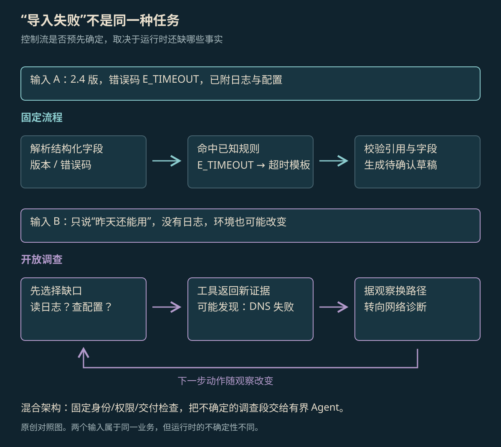

PREDEFINED OR ADAPTIVE
Workflow 与 Agent
Workflow 先在程序里写好处理顺序和分支；Agent 让 AI 根据工具结果决定接下来做什么。两者都能使用模型和工具，差别是谁选择下一步、能改多少步骤。
本页目录
谁决定下一步#
Workflow（工作流）先用代码写好步骤、分支和继续执行的条件。Agent 则让 AI 根据目标和工具结果，在允许范围内决定下一步。Anthropic 用处理路径的不同区分两者。[1] 两者都可以用模型、工具，也都能保存任务进度，所以“有没有调用大模型”不是区别。
| 要决定的事 | Workflow | Agent |
|---|---|---|
| 谁决定下一步 | 代码中写好的顺序和分支条件 | AI 根据任务进展选择动作 |
| 模型能改变什么 | 每步写出的内容，或选哪个已有分支 | 先查什么、再做什么、是否重试或停止 |
| 谁规定允许做什么 | 应用代码 | 应用同样规定工具、权限、额度和完成要求 |
固定流程也可以让 AI 先分类，再进入程序已经写好的分支；Agent 也可以只使用事先给定的工具。主要差别在于执行时怎样选择和调整动作，不是 AI 能不能改写程序结构。实际系统经常把两种做法放在一起用。
固定步骤与边查边决定#
故障处理可以看出这种差别。版本、错误码和日志都齐全时，程序可以按已知规则查资料、生成草稿。原因不明确时，就需要先读日志，再看结果决定查网络、权限还是文件格式。后一种做法，要查到新信息才知道下一步。

放大查看 ↗第一份工单可以按错误码选模板，再请 AI 把日志整理成说明。所需信息齐全时，每一步之后做什么可以提前写好。第二份工单若查到的是 DNS 解析失败，还套用“调大超时”的模板就会处理错方向，需要根据查到的结果换做法。
让 AI 选择下一步，不等于让它随便做。可用工具、能读哪些资料、最多调查几轮，仍由应用限定。AI 只能在这些范围内选择动作，不能因此管理整个系统。
两种做法的代码#
下面两段是说明步骤的伪代码，不能直接当完整程序运行。第一段提前写好了可走的分支；第二段让 AI 根据新查到的资料选择下一种调查动作。
# 固定 Workflow：所有可走的边都预先写明
fields = extract(ticket)
if fields.error_code == "E_TIMEOUT":
evidence = lookup_timeout_docs(fields.version)
draft = render_timeout_template(fields, evidence)
else:
draft = send_to_known_error_queue(fields)
return validate_and_deliver(draft)# 有界 Agent：环境结果参与下一次选路
state = Investigation(ticket=ticket, evidence=[])
for _ in range(max_steps):
action = decide(state, allowed_tools)
if action.kind == "answer":
return validate_and_deliver(action.draft)
observation = run_readonly(action)
state.add(action, observation)
return handoff_with_evidence(state)两种做法都能保存日志、保存进度和让人接手，也都可能出错。第二段把一部分步骤交给 AI 选择，因此还要检查它为什么再次查询、有没有查到新内容，以及为什么此时结束。
固定流程中加入 Agent#
一种组合是：程序先检查用户身份和输入，再处理能按已知规则解释的工单；只有无法解释的工单，才交给 Agent 反复查资料。查完后，引用和字段仍按固定规则检查，正式提交还要单独授权。LangGraph 可以用同一套程序连接工作流和 Agent，并为这些步骤保存进度。[2][3]
这样，固定步骤仍容易逐一测试，额外的模型调用留给确实缺信息的部分。同时还得维护一个判断：哪些请求直接处理，哪些需要继续调查。这个判断分错了，也应单独记录，否则很难解释平均费用为何变化。
适用情况与费用取舍#
| 比较什么 | 固定步骤可能更合适 | 边查边决定可能更有用 |
|---|---|---|
| 步骤是否固定 | 版本与错误码能唯一确定处理步骤 | 日志会揭示事先未知的原因 |
| 失败解释 | 容易看出走错了哪个分支、缺哪个字段 | 需要检查查资料的过程和结果怎样变化 |
| 费用与等待 | 常规请求较少额外回合 | 增加回合但可能减少人工调查 |
| 改动后重新测试 | 给每个分支准备固定测试样本 | 还要测试工具返回不同结果、何时停止 |
比较两种做法时，需要保持工具权限、资料版本和费用等额度相同，再按已知错误、缺少信息、资料矛盾等情况分别统计。只看总成功率，可能看不见“简单请求变慢了，但少数难题处理好了”。是否值得让 AI 自己选择更多步骤，要看各类请求分别改善了多少。
允许做什么、怎样算完成#
从人工处理记录里，可以看三个问题：同类工单是否每次都查同一套资料，查到什么会让人换方向，拿到哪些信息就足以交付。前两项说明哪些步骤能提前固定，第三项说明什么时候可以结束。
本例的要求是：错误码已知时按固定步骤处理；原因未知时，只读资料来调查；资料或权限不足时，把已经找到的内容交给下一位处理。无论走哪种步骤，草稿都要写清版本和来源，正式提交还需授权。
参考资料
论文、官方文档与案例依据。
- [1]Building effective agents ↗
2024-12-19 官方架构文章；用于控制流区分与模式背景，产品现状以更新文档为准。
- [2]LangGraph overview ↗
官方说明确定性与模型驱动步骤可以混合。
- [3]LangGraph Persistence ↗
官方检查点与持久化能力；本文混合流程为原创教学设计。